2127C30 hydraulic speed selection system pump - r r
- Path
- Procedures > 21 GEARBOX > 2127 ELECTRO-HYDRAULIC SELECTION. GEARBOX EXTERNAL. CONTROLS > 2127C hydraulic gear selection system > 2127C30 hydraulic speed selection system pump - r r
- Kind
- repair procedure (removal / refitting; the operation number is the code)
- Applies to
- all engines; all production periods
- Interactive page
- https://sloeber94.github.io/elrnDB-a156/en/#/3237950
Applies to: all engines; all production periods; only with equipment: Smart gearbox
 Removing
Removing
 Refitting
RefittingConnect the Examiner diagnostic equipment.
Select 'Alf 156 Selespeed' on the Examiner.
Select 'Control Unit Test' on the Examiner and select the 'Marelli Selespeed Automatic Transmission'.
Press 'Active Diagnosis' on the Examiner and select 'Accumulator depressurizing'.
Continue with the procedure on the Examiner.
Ensure that the ignition key is in OFF position, then disconnect the negative battery terminal.
 | Name | Connector |
|---|---|---|
- | Battery |
2127C12 hydraulic gear selection fluid reservoir - r r .
1. Release the electrical connection for the electro-hydraulic gear selection system electric pump from the support and disconnect it.
| Name | Connector |
|---|---|---|
1 | Automatic transmission pump |
2. Release the pipe between the electro-hydraulic selection hydraulic unit and the fluid reservoir from the band on the support.
3. Release the pipe between the electric pump and the electro-hydraulic selection hydraulic unit from the band on the support.
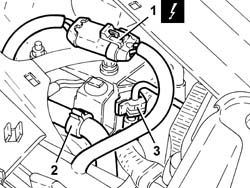
Applies to: all engines; all production periods; only with equipment: Smart gearbox
1. Undo the connector (1a) and rmeove the pipe between the hydraulic circuit fluid reservoir and the electro-hydraulic gear selection electric pump (1b).
2. Disconnect the pipe between the electric pump and the electro-hydraulic gear selection hydraulic unit, electric pump side.
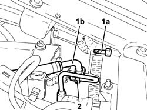
Applies to: all engines; all production periods; only with equipment: Smart gearbox
1. Undo the bolts fixing the support for the electro-hydraulic gear selection hydraulic circuit fluid reservoir to the bodyshell.
2. Remove the support (2a), complete with electro-hydraulic gear selection system electric pump (2b).
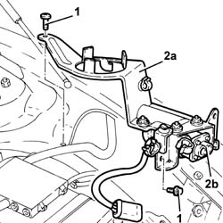
Applies to: all engines; all production periods; only with equipment: Smart gearbox
Refitting
RemovingPlace the support, complete with electro-hydraulic gear selection system electric pump, back in its housing.
Tighten the bolts fixing the electro-hydraulic gear selection hydraulic circuit fluid reservoir mounting to the bodyshell.
1. Connect the pipe between the electric pump and the electro-hydraulic gear selection hydraulic unit (1a) to the electric pump and tighten the connector (1b) to the recommended torque.
 | Fastening | Component | Ø | Value (daNm) |
|---|---|---|---|---|
1b | Connector | PIPE FROM ELECTRIC PUMP/IMPLEMENTATION UNIT | M12 | (Pump side) 1.2 - 1.5 |
2. Place the pipe between the hydraulic circuit fluid reservoir and the electro-hydraulic gear selection electric pump (2a) back in its housing and fix it to the electric pump tightening the connector (2b) to the recommended torque.
| Fastening | Component | Ø | Value (daNm) |
|---|---|---|---|---|
2b | Connector | PIPE FROM TANK TO ELECTRIC PUMP | M14 | (Pump side) 0.8 - 1.3 |
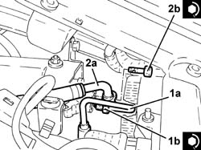
Applies to: all engines; all production periods; only with equipment: Smart gearbox
Fix the pipe between the electric pump and the electro-hydraulic gear selection hydraulic unit to the mounting using the band.
Fix the pipe between the electro-hydraulic selection hydraulic unit and the fluid reservoir to the support using the band.
Connect the electrical connection for the electro-hydraulic gear selection system electric pump and fix it to the mounting.
2127C12 hydraulic gear selection fluid reservoir - r r .
Connect the negative (-) battery terminal.
2127C06 Electro-hydraulic selection manual gearbox HYDRAULIC SYSTEM - Bleeding air .
Applies to: engines: 2.0 JTS, 2.0 JTS; all production periods; only with equipment: Smart gearbox
Removing
RefittingPosition the vehicle on the ramp.
Connect the Examiner diagnostic equipment.
Select 'Alfa Selespeed' on the Examiner.
Select 'Control Unit Test' on the Examiner and select the 'Marelli Selespeed Automatic Transmission'.
Press 'Active Diagnosis' on the Examiner and select 'Accumulator depressurizing'.
Continue with the procedure on the Examiner.
Ensure that the ignition key is in OFF position, then disconnect the negative battery terminal.
| Name | Connector |
|---|---|---|
- | Battery |
1. Remove the electro-hydraulic gear selection system hydraulic circuit fluid reservoir cap.
Drain the electro-hydraulic gear selection system hydraulic circuit fluid reservoir.
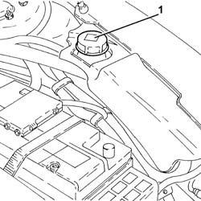
Applies to: engines: 2.0 JTS, 2.0 JTS; all production periods; only with equipment: Smart gearbox
Proceed with removal 4450B02 left front wheel r r .
Proceed with removal - 7055B90 Left front WHEEL ARCH LINER - R.R. .
Proceed with removal 7055B54 under-engine guard - r r .
Proceed with removal 5540B16 FRONT LIGHT CLUSTER with direction indicator (one), left or right - R.R. (Left side).
Undo the bolts and remove the control unit protection.
1. Release the electrical connection for the electro-hydraulic gear selection system electric pump from the support and disconnect it.
| Name | Connector |
|---|---|---|
1 | Automatic transmission pump |
2. Disconnect the electrical connections (2a) and (2b) from the engine management control unit.
| Name | Connector |
|---|---|---|
2a | Engine management ECU |
| Name | Connector |
|---|---|---|
2b | Engine management ECU |
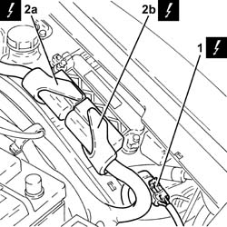
Applies to: engines: 2.0 JTS, 2.0 JTS; all production periods; only with equipment: Smart gearbox
1. Working in the housing created by removing the light cluster, undo the connector (1a) and disconnect the pipe between the hydraulic circuit fluid reservoir and the electro-hydraulic gear selection electric pump (1b), electric pump side.
2. Undo the connector (2a) and disconnect the pipe from the electric pump to the electro-hydraulic gear selection hydraulic unit (2b), electric pump side.
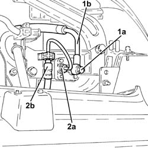
Applies to: engines: 2.0 JTS, 2.0 JTS; all production periods; only with equipment: Smart gearbox
1. Loosen the band and disconnect the pipe between the electro-hydraulic gear selection hydraulic unit and the fluid reservoir, reservoir side.
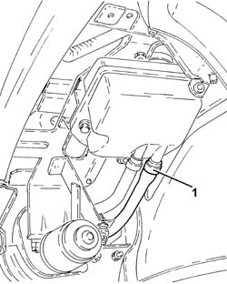
Applies to: engines: 2.0 JTS, 2.0 JTS; all production periods; only with equipment: Smart gearbox
1. Undo the front bolts fixing the support for the hydraulic circuit fluid reservoir and the electro-hydraulic selection system electric pump to the bodyshell.
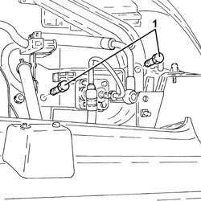
Applies to: engines: 2.0 JTS, 2.0 JTS; all production periods; only with equipment: Smart gearbox
1. Undo the rear bolts fixing the support for the hydraulic circuit fluid reservoir and the electro-hydraulic selection system electric pump to the bodyshell.
2. Undo the bolt (2a) and remove the bracket (2b).
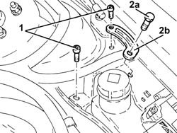
Applies to: engines: 2.0 JTS, 2.0 JTS; all production periods; only with equipment: Smart gearbox
Release the pipes from the bands on the support for the hydraulic circuit fluid reservoir and electro-hydraulic selection system electric pump.
1. Working via the wheel arch, remove the support for the hydraulic circuit fluid reservoir and electro-hydraulic selection system electric pump (1a), complete with engine management control unit (1b).
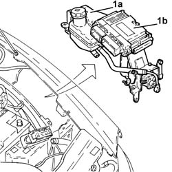
Applies to: engines: 2.0 JTS, 2.0 JTS; all production periods; only with equipment: Smart gearbox
1. At the bench, undo the nuts (1a) and remove the gearbox electro-hydraulic selection system pump (1b) from the support.
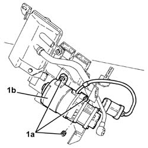
Applies to: engines: 2.0 JTS, 2.0 JTS; all production periods; only with equipment: Smart gearbox
Refitting
RemovingPlace the electro-hydraulic gear selection system pump back on the support and fasten it using the nuts.
Place the support for the hydraulic circuit fluid reservoir and electro-hydraulic selection system electric pump, complete with engine management control unit, back in its housing.
Fasten the pipes to the bands fixing the support for the hydraulic circuit fluid reservoir and electro-hydraulic selection system electric pump.
Place the bracket back in its housing and secure it using the bolt.
Tighten the rear bolts fixing the support for the hydraulic circuit fluid reservoir and electro-hydraulic selection system electric pump to the bodyshell.
Tighten the front bolts fixing the support for the hydraulic circuit fluid reservoir and electro-hydraulic selection system electric pump to the bodyshell.
Connect the pipe from the electro-hydraulic selection hydraulic actuator unit to the fluid reservoir, reservoir side and tighten the band.
1. Connect the pipe between the electric pump and the electro-hydraulic gear selection hydraulic unit (1a), electric pump side and tighten the connector (1b) to the recommended torque.
| Fastening | Component | Ø | Value (daNm) |
|---|---|---|---|---|
1b | Connector | PIPE FROM PUMP/ACTUATOR UNIT | M12 | (Pump side) 1.2 ÷ 1.5 |
2. Connect the pipe between the hydraulic circuit fluid reservoir and the electro-hydraulic gear selection electric pump (2a), electric pump side, and tighten the connector (2b) to the recommended torque.
| Fastening | Component | Ø | Value (daNm) |
|---|---|---|---|---|
2b | Connector | PIPE FROM RESERVOIR TO PUMP | M14 | (Pump side) 0.8 ÷ 1.3 |
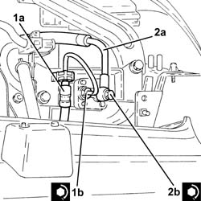
Applies to: engines: 2.0 JTS, 2.0 JTS; all production periods; only with equipment: Smart gearbox
Connect the electrical connection to the engine management control unit.
Connect the electrical connection for the electro-hydraulic gear selection system electric pump and fix it to the mounting.
Place the control unit protection back in its housing and secure it using the bolts.
Proceed with the refitting 5540B16 FRONT LIGHT CLUSTER with direction indicator (one), left or right - R.R. (Left side).
Proceed with refitting 7055B54 under-engine guard - r r .
Proceed with refitting - 7055B90 Left front WHEEL ARCH LINER - R.R. .
Proceed with refitting 4450B02 left front wheel r r .
Connect the negative (-) battery terminal.
Proceed with refitting 2127C04 ELECTROHYDRAULIC selection gearbox hydraulic system FLUID - Check level and top up if necessary. .
Proceed with refitting 2127C06 Electro-hydraulic selection manual gearbox HYDRAULIC SYSTEM - Bleeding air .
Remove the car from the ramps.
Applies to: engines: 3.2 V6; all production periods; only with equipment: Smart gearbox
Removing
RefittingConnect the Examiner diagnostic equipment.
Select 'Alf 156 Selespeed' on the Examiner.
Select 'Control Unit Test' on the Examiner and select the 'Marelli Selespeed Automatic Transmission'.
Press 'Active Diagnosis' on the Examiner and select 'Accumulator depressurizing'.
Continue with the procedure on the Examiner.
Ensure that the ignition key is in the OFF position, then disconnect the negative battery terminal (-).
| Name | Connector |
|---|---|---|
- | Battery |
Proceed with removal 2127C12 hydraulic gear selection fluid reservoir - r r .
1. Release the electrical connection for the electro-hydraulic gear selection system electric pump from the support and disconnect it.
| Name | Connector |
|---|---|---|
1 | Automatic transmission pump |
2. Release the pipe between the electro-hydraulic selection hydraulic unit and the fluid reservoir from the band on the support.
3. Release the pipe between the electric pump and the electro-hydraulic selection hydraulic unit from the band on the support.
Applies to: engines: 3.2 V6; all production periods; only with equipment: Smart gearbox
1. Undo the connector (1a) and rmeove the pipe between the hydraulic circuit fluid reservoir and the electro-hydraulic gear selection electric pump (1b).
2. Disconnect the pipe between the electric pump and the electro-hydraulic gear selection hydraulic unit, electric pump side.
Applies to: engines: 3.2 V6; all production periods; only with equipment: Smart gearbox
1. Undo the bolts fixing the support for the electro-hydraulic gear selection hydraulic circuit fluid reservoir to the bodyshell.
2. Remove the support (2a), complete with electro-hydraulic gear selection system electric pump (2b).
Applies to: engines: 3.2 V6; all production periods; only with equipment: Smart gearbox
At the bench, undo the nuts and separate the electro-hydraulic selection gearbox system electric pump from the mounting.
Applies to: engines: 3.2 V6; all production periods; only with equipment: Smart gearbox
Refitting
RemovingAssemble the electro-hydraulic gear selection system pump on the mounting and fasten it using new self-locking nuts.
Place the support, complete with electro-hydraulic gear selection system electric pump, back in its housing.
Tighten the bolts fixing the electro-hydraulic gear selection hydraulic circuit fluid reservoir mounting to the bodyshell.
1. Connect the pipe between the electric pump and the electro-hydraulic gear selection hydraulic unit (1a) to the electric pump and tighten the connector (1b) to the recommended torque.
| Fastening | Component | Ø | Value (daNm) |
|---|---|---|---|---|
1b | Connector | PIPE FROM PUMP/ACTUATOR UNIT | M12 | (Electric pump side) 1.4 ÷ 1.8 |
2. Connect the pipe between the hydraulic circuit fluid reservoir and the electro-hydraulic gear selection electric pump (2a), electric pump side, and tighten the connector (2b) to the recommended torque.
| Fastening | Component | Ø | Value (daNm) |
|---|---|---|---|---|
2b | Connector | PIPE FROM PUMP/ACTUATOR UNIT | M12 | (Electric pump side) 1.4 ÷ 1.8 |
Applies to: engines: 3.2 V6; all production periods; only with equipment: Smart gearbox
Fix the pipe between the electric pump and the electro-hydraulic gear selection hydraulic unit to the mounting using the band.
Fix the pipe between the electro-hydraulic selection hydraulic unit and the fluid reservoir to the support using the band.
Connect the electrical connection for the electro-hydraulic gear selection system electric pump and fix it to the mounting.
Proceed with refitting 2127C12 hydraulic gear selection fluid reservoir - r r .
Proceed with refitting - 0010T47 hydraulic system fluid for gearbox with hydraulic selection check level and top up if necessary .
Proceed with refitting - 0010T48 hydraulic system for gearbox with hydraulic selection bleed air .
Topics linked from this page (11)
- 2127C04 ELECTROHYDRAULIC selection gearbox hydraulic system FLUID - Check level and top up if necessary.
- 2127C06 Electro-hydraulic selection manual gearbox HYDRAULIC SYSTEM - Bleeding air
- 2127C12 hydraulic gear selection fluid reservoir - r r
- 4450B02 left front wheel r r
- 5540B16 FRONT LIGHT CLUSTER with direction indicator (one), left or right - R.R.
- 7055B54 under-engine guard - r r
- A1 Battery
- A1B Battery ( BATTERY NEGATIVE )
- M10A Engine management ECU ( ENGINE )
- M10B Engine management ECU ( ENGINE )
- N48 Automatic transmission pump